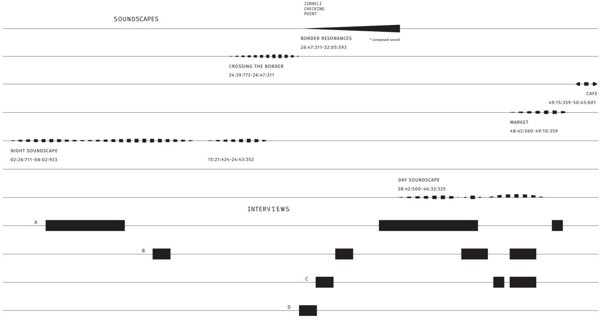

Transmissions
- 2026Hydraulic Border Intervals – translocal listening session (upcoming)Carewaves, Radio Kapitał, Warsaw
- 2025Night Perspectives: Soundscapes of Western Thrace through the Politics of ListeningRADIO CASo, Centro de Arte Sonoro, Buenos Aires
- 2020–2025Politics of Listening: Soundscapes from Ramallah, PalestineDeutschlandfunk Kultur, STEGI.RADIO, Wave Farm
- 2025Listening to the World – 100 Jahre RadiokunstDeutschlandfunk Kultur
- 2023Caminata Radial: En vivo desde Playa AnchaRadio Tsonami, Valparaíso
- 2019Flanieren durch die internationale RadiokunstÖ1 Kunstradio
- 2018Radia.Fm guest radio showsbauhaus.fm for Radia.fm
